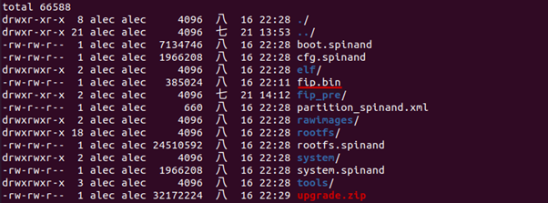
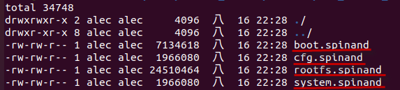

6.2. 预烧程序¶
6.2.1. 使用前准备¶
以SPINAND为例，从SDK编译下列档案:
fip.bin - bootloader + uboot
boot.spinand - Linux image
logo.jpg - boot logo (Optional)
rootfs.spinand - root file system
system.spinand – system partition (Optional)
cfg.spinand – encrypted ISP PQ partition (Optional)
fip.bin 从 install/<board name> 目录下取得:
$ ls -al install/soc_cv1820_wevb_0005b_spinand

*.spinand从 install/<board name>/rawimages 目录下取得:
$ ls -al install/soc_cv1820_wevb_0005b_spinand/rawimages

注意
注意：rawimages 目录下的*.spinand 文件是用于烧录器烧录的裸 images；上一层的目录下的*.spinand 文件为 CVITEK SD card/USB 烧录专用的格式，基于裸的 image 多加了128 bytes header 信息
进入 build/tools/common/spinand_tool/fip_maker，执行如下操作：
make clean; make
拷贝 fip.bin 至该目录下，执行 ./fip_maker {pagesize} {DID/MID} {input_path} {output_path},其中 {pagesize} 和 {DID/MID} 参数值请从 spi nand 颗粒 datasheet 中获取
示例：
./fip_maker 2048 0x71e5 ./fip.bin ./fip_out.bin
1. 若无错误，会产出fip_out.bin。此 fip_out.bin 即为烧录器烧录所需的文件 备注：烧录器以及 tftp 烧录均需要使用上述 fip_out.bin 文件
执行上述三个步骤准备好二进制文件后，可进行烧录器预烧。
6.2.2. 分区表¶
CVITEK 方案Flash分区表以xml格式定义，细节请参考《Flash 分区工具使用指南》。
Flash分区以xml格式定义，以boards/default/partition/partition_spinand_page_2k.xml为例:
<physical_partition type="spinand">
<partition label="fip" size_in_kb="2560" file="fip.bin"/>
<partition label="BOOT" size_in_kb="8192" file="boot.spinand"/>
<partition label="MISC" size_in_kb="384" file="logo.jpg" />
<partition label="ENV" size_in_kb="128" file="" />
<partition label="ROOTFS" size_in_kb="71680" file="rootfs.spinand" />
<partition label="SYSTEM" size_in_kb="20480" file="system.spinand" mountpoint="" type="ubifs" />
<partition label="CFG" size_in_kb="4096" file="cfg.spinand" mountpoint="/mnt/cfg" type="ubifs" />
<partition label="DATA" file="" mountpoint="/mnt/data" type="ubifs" />
</physical_partition>
以 2KB page size 128KB blocksize 的 NAND flash 为例：由xml文件上数据，将各分区大小换算成block大小后（公式：block个数 = 分区大小 / 单一block大小），如下所示:
Partition |
Start block offset |
Number of blocks |
Binary files |
|---|---|---|---|
FIP |
0 |
20 |
fip.bin |
BOOT |
24 |
64 |
boot.spinand |
MISC |
顺排（遇坏块则跳过） |
3 |
logo.jpg |
ENV |
顺排（遇坏块则跳过） |
1 |
Null (无内容) |
ENV_BAK |
顺排（遇坏块则跳过） |
1 |
Null (无内容) |
ROOTFS |
顺排（遇坏块则跳过） |
560 |
rootfs.spinand |
SYSTEM |
顺排（遇坏块则跳过） |
160 |
system.spinand |
CFG |
顺排（遇坏块则跳过） |
32 |
cfg.spinand |
DATA |
顺排（遇坏块则跳过） |
Don’t Care |
Null (无内容) |
6.2.3. 烧写规则¶
6.2.3.1. FIP 分区¶
- FIP 分区包含两个部分：
处理器相关的Bootloader(无开源)， u-boot. CVITEK 编译流程会自动将两者打包成一个 fip.bin nand 烧录时烧录逻辑从 block 0~19 之间依序挑选好块，总共烧写两份，第一份会写在 block 0~9, 第二份会烧写在 block 10~19，互为备份。
fip.bin本身烧入进spinand 大概会使用到 3~4个 blocks，但因 spinand 特性问题， block 可能会出现坏块状况，所以剩余未使用的 block 预留用于出现坏块时使用。
例一
没有坏块的话，将第一份 fip.bin 烧写至block 0, 1, 2, 3, 4；第二份fip.bin烧写至block 9, 10, 11, 12, 13。
例二
若block 4, 11为坏块，请将第一份 fip.bin 烧写至block 0, 1, 2, 3, 5； 第二份 fip.bin 烧写至block 9, 10, 12, 13, 14
6.2.3.2. 其他分区¶
照分区表配置，依序烧写，遇到坏块则略过，跳下一个好块再烧写。